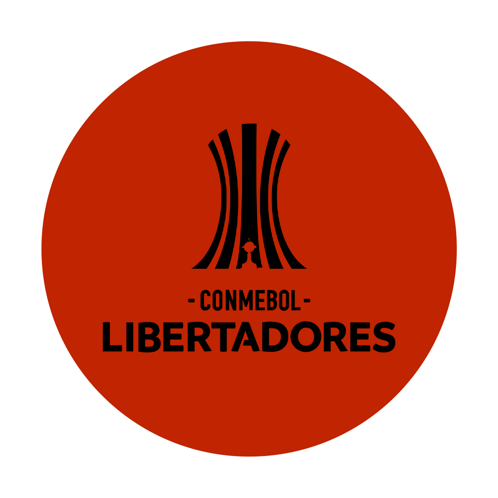
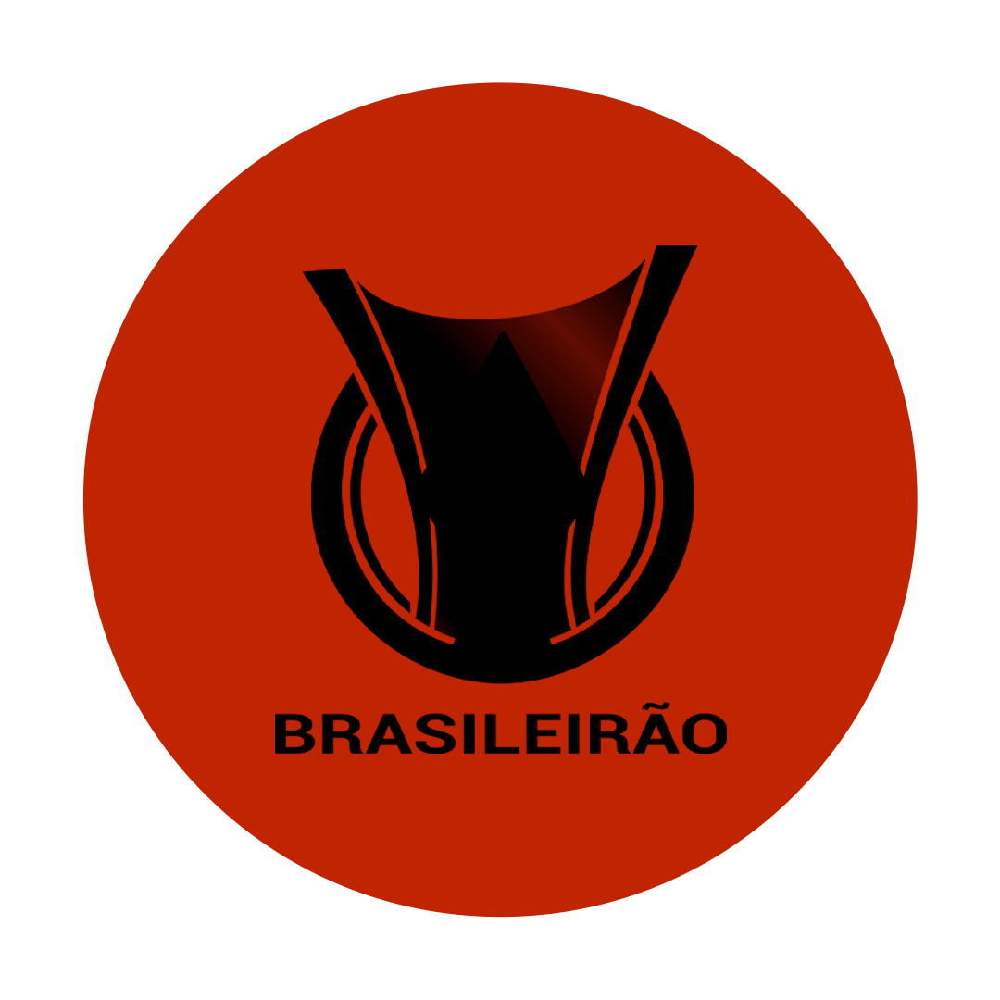
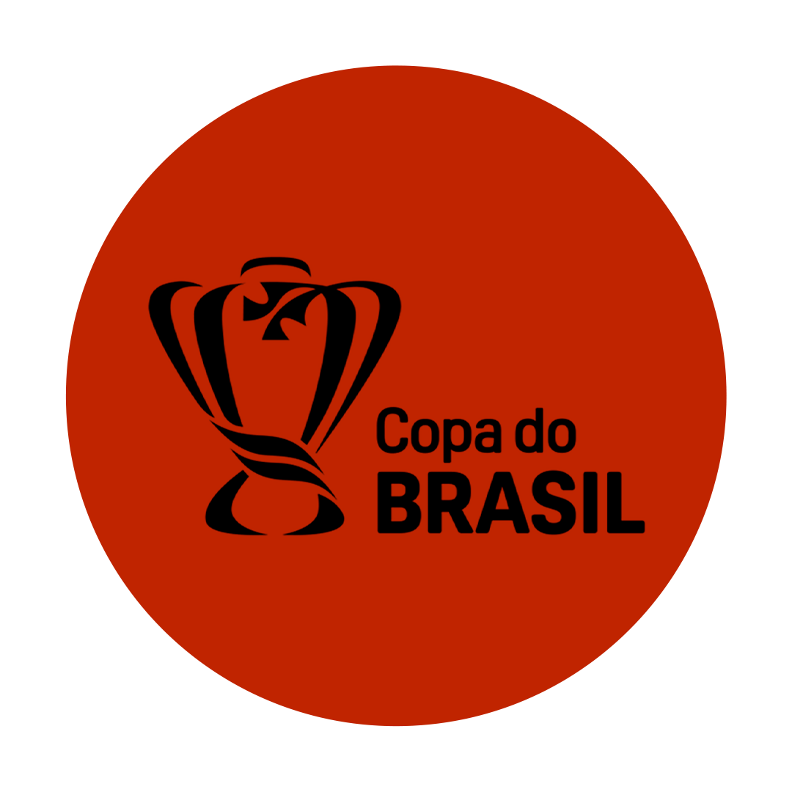
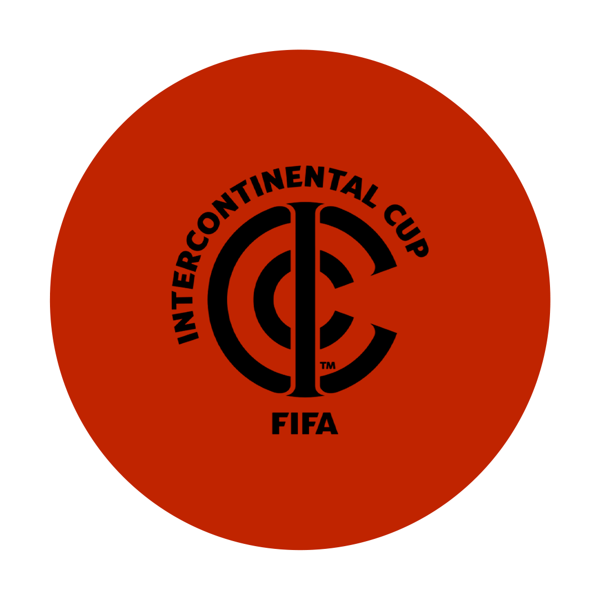
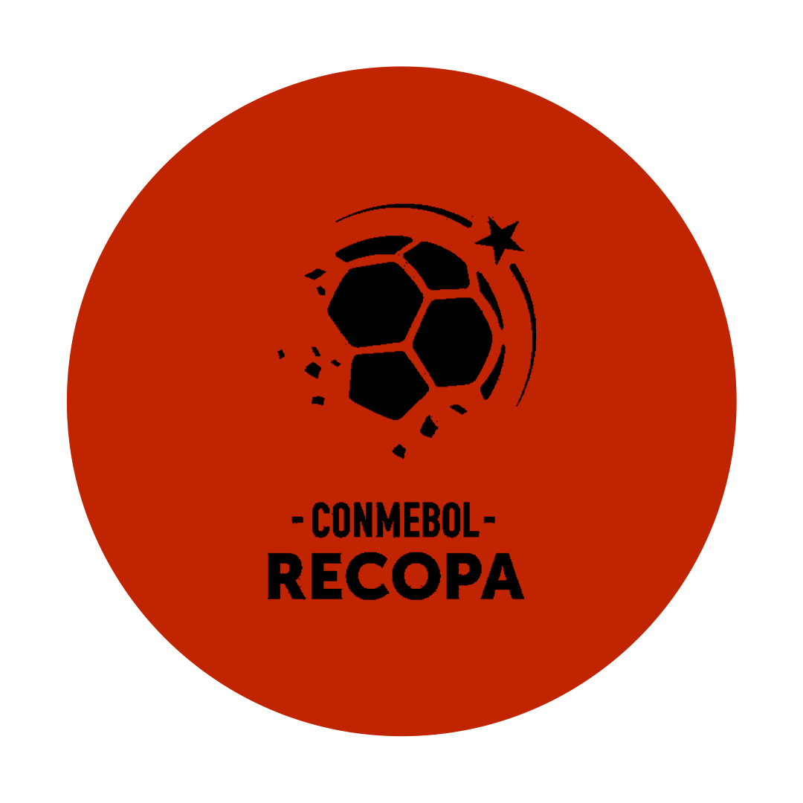
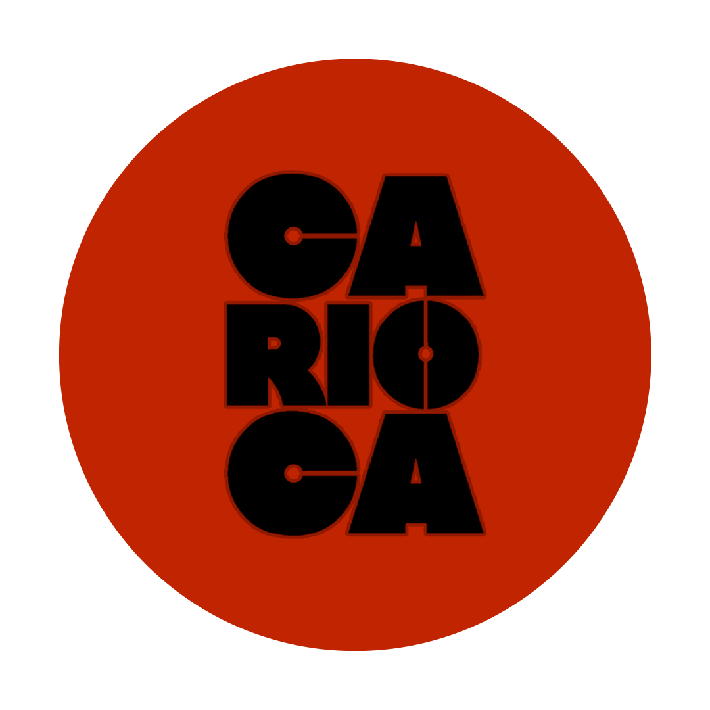
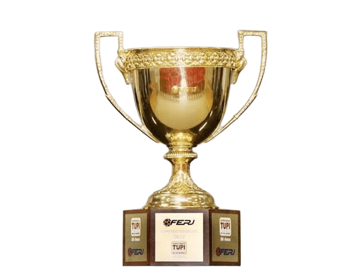

Títulos

Conmebol Libertadores
O título mais cobiçado da América chegou em 1981, com um time histórico liderado por Zico. Depois de 38 anos de espera, o Flamengo voltou ao topo do continente em 2019, com a virada épica sobre o River Plate, e ampliou a coleção em 2022, contra o Athletico Paranaense — consolidando o clube entre os grandes campeões sul-americanos.


Brasileirão
Poucos times viveram tantos capítulos de glória no Brasileirão quanto o Flamengo. Das conquistas dos anos 80 e do título de 1992 aos bicampeonatos recentes em 2019 e 2020, a Nação já comemorou o caneco nacional oito vezes — sempre com aquela emoção de ver o Maracanã lotado de vermelho e preto.


Copa do Brasil
Um torneio de mata-mata que testa nervos e exige elenco forte na reta final da temporada. O Flamengo já ergueu esse troféu em diferentes gerações — de 1990 até o título mais recente, em 2022 — provando que sabe jogar sob pressão quando o assunto é decisão.


Mundial
Em 1981, o Flamengo de Zico enfrentou o Liverpool na decisão do Mundial Interclubes e goleou por 3 a 0, em uma das atuações mais lembradas da história do clube. Zico foi eleito o melhor jogador do mundo naquele ano — um feito que até hoje é celebrado pela torcida rubro-negra.


Recopa
Prêmio de quem chega como campeão da Libertadores, a Recopa Sul-Americana virou hábito recente do Flamengo, que já a conquistou mais de uma vez na década de 2020. Cada taça reforça o novo ciclo vitorioso do clube no cenário continental.


Carioca
Ninguém tem mais títulos estaduais do que o Flamengo. Desde os primórdios do futebol carioca, o clube construiu um domínio histórico sobre os rivais do Rio de Janeiro, acumulando dezenas de taças e mantendo viva a rivalidade mais quente do estado a cada nova edição.
